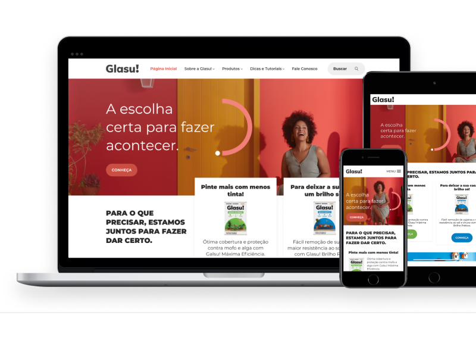
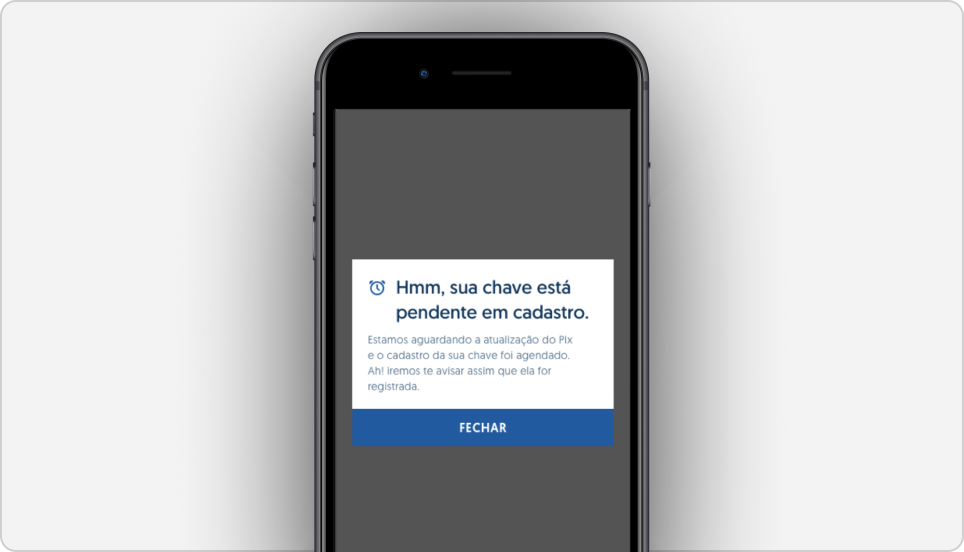
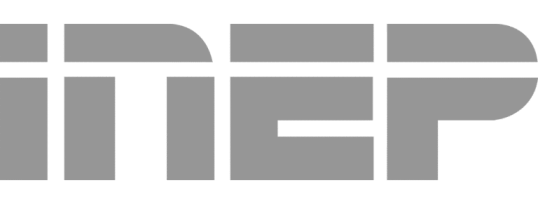

PORTFOLIO · PRODUCT DESIGN & UX RESEARCH
Mariana Meirelles
Senior Product Designer & UX Researcher
Over 10 years designing highly complex digital products in financial services and the public sector.
Brasília, Brazil · remote

Cases

CASE 1 · COMFY CATS HOTEL · 2026
Redesigning a landing page with AI
From diagnosis to production in 1.5 days of work
1.5 daysWorking time with AI, from diagnosis to launch
View case
CASE 2 · TECHBACK BB (BANCO DO BRASIL) · 2024
Guerrilla Research in Sustainability
How open-air interviews at Rec'n'Play showed that e-waste disposal needed a self-service journey
3 daysOf observation and interviews at Rec'n'Play
View case
CASE 3 · GLASU! (BASF/SUVINIL) · 2021
Strategy, Management and Delivery
Launching a New Retail Brand in 3 Months
100%On-time delivery (time to market)
View case
CASE 4 · CERTIFICAMED · 2020-2021
Leadership in Healthtech
How telemedicine research revealed that credibility is part of the product
82.5%Of responding doctors had already seen a patient online
View case
CASE 5 · BANCO DO BRASIL · 2020
Strategic Design at National Scale
How UX Writing kept Pix stable at Banco do Brasil
100%Stability, with zero server downtime on launch day
View case
CASE 6 · BANCO DO BRASIL · 2019
Strategic Design in Fintech
How Designing Banco do Brasil's Digital Wallet Connected Business and Engineering
5 flowsCritical flows, designed in Discovery and launched in the app stores
View caseAbout me
- I like to understand the problem before designing the screen
- I use research to decide what to build
- My front-end background makes dialogue with engineering easier
- I apply generative AI critically, from research to prototype
Impact in numbers
Career path
- 2016SEA TecnologiaUX/UI Designer
- 2019StefaniniSenior Product Designer
- 2021GaugeDesign Manager
- 2023CotricDesign Strategy
- 2024BriviaExperience Design Lead
- 2025Petry DesignDesign Consultant
Some clients I have worked with




How I work
Methodology: Double Diamond
From problem to need and from need to solution, diverging and converging at every stage. It is the Design Thinking foundation I apply to every project.
The methodology in practice
Discover
Kick-off, desk research, stakeholder interviews and benchmarking. On Pix, Central Bank regulation became a risk map.
Define
Personas, content inventory, information architecture and sitemap. On Carteira bB, four official personas aligned the team.
Develop
Co-creation workshops, to-be flows, wireframes and clickable prototypes, validated with Business, IT and Security.
Deliver
High-fidelity UI, usability testing with SUS scores, content audit and a hands-on handoff with engineering.
Working principles
Problem before screens
I frame the context and compare alternatives before designing.
Data-informed decisions
Metrics, research and quick tests when data is missing.
Design System with strategy
I evolve components and patterns instead of creating exceptions.
Close to engineering
My front-end background makes dialogue and handoff easier.
Some tools
| Area | Tools |
|---|---|
| Design and prototyping | Figma, Axure, Marvel |
| Research and co-creation | Lookback, Miro, Hotjar, Dovetail |
| Data | Mixpanel, Google Analytics |
| Generative AI | Claude, ChatGPT, Gemini, NotebookLM |
| Front-end | HTML, CSS, JS, React |